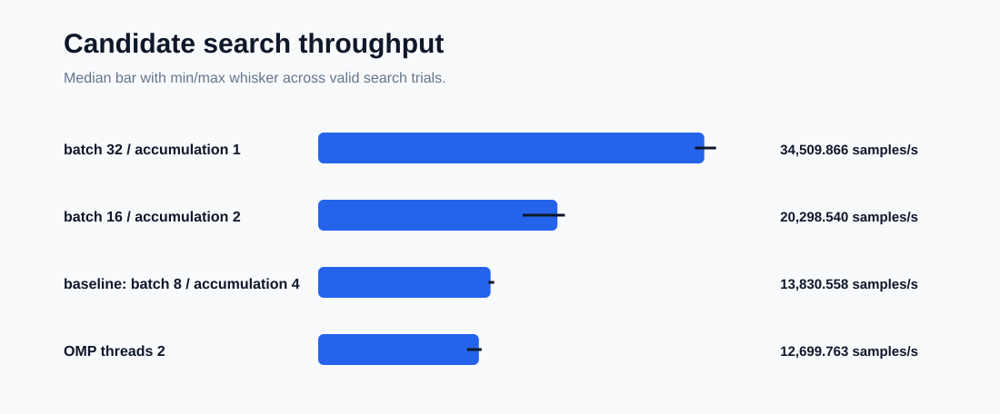
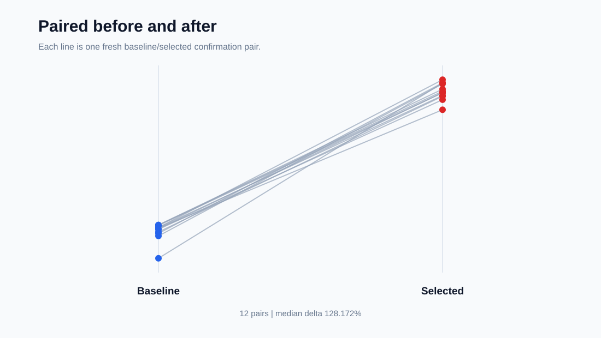
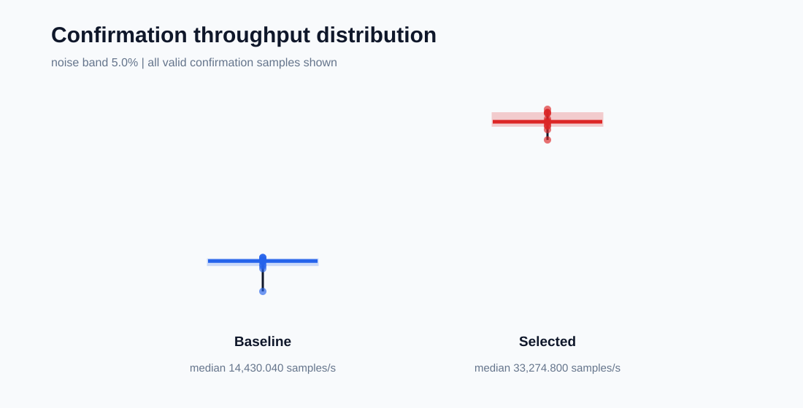
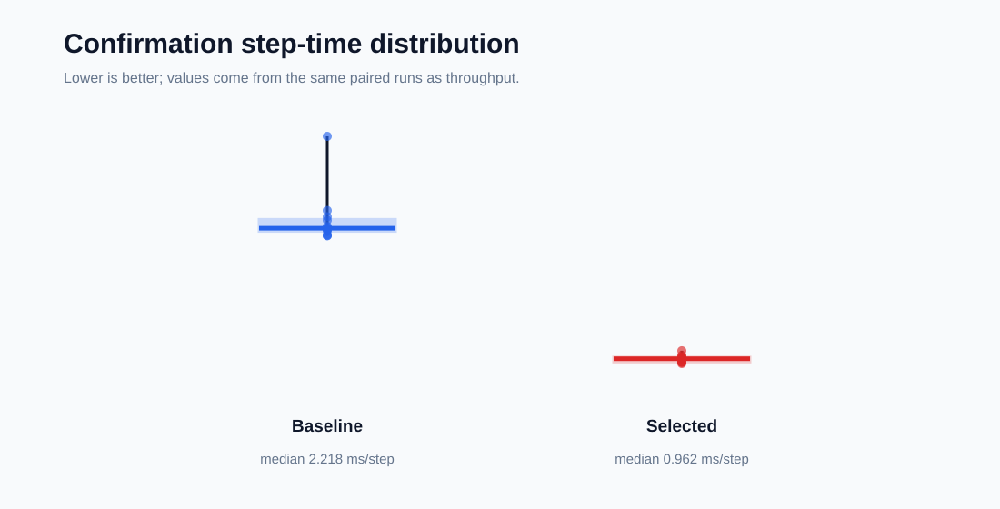
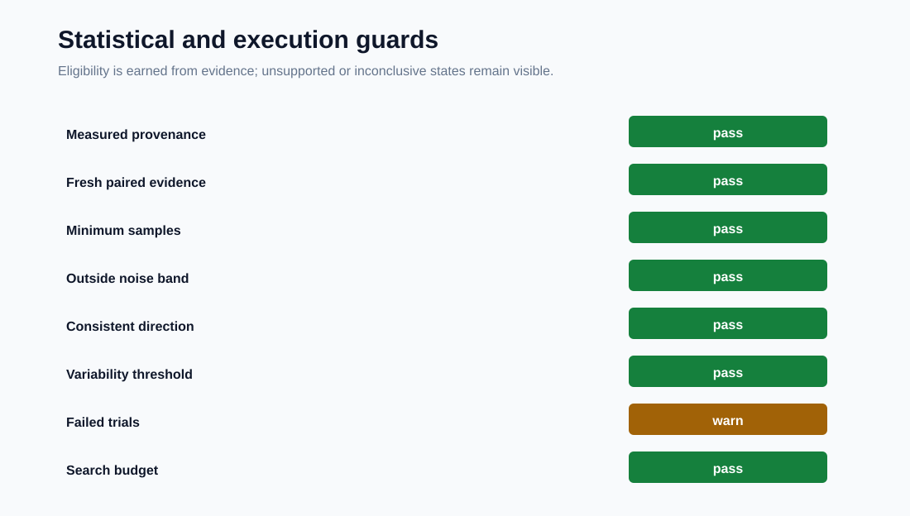
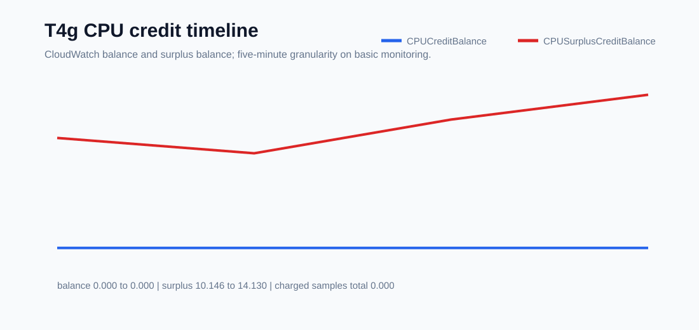

PerfRunbench measured evidence
Training tuning before and after
Repeated paired confirmation from one bounded PyTorch training protocol. Search trials, warm-up trials, failures, guards, and cleanup evidence remain separate.
Baseline median14,430.040 samples/s
Selected median33,274.800 samples/s
Paired median delta128.172%
Paired confirmations12
Evidence boundary
| Source | tuning_result.json |
|---|---|
| Run ID | 20260728_142936_906425 |
| Result origin | measured |
| Status | recommended |
| Selected candidate | micro_batch_size_32_gradient_accumulation_1 |
| Noise band | 5.000% |
| Claim boundary | Best observed eligible configuration under the tested training workload, slice protocol, and measurement protocol. |
A result from one T4g.small and a synthetic CPU PyTorch workload is not a general PyTorch or Arm speedup claim. C7g and llama.cpp evidence use different protocols and must not be combined with this result.
Candidate Ranking

Paired Before After

Throughput Distribution

Step Time Distribution

Guard Summary

Cpu Credit Timeline

Statistical guards
| Stage | Code | Status | Message |
|---|---|---|---|
| trial | failed_trials_preserved | warn | 4 failed trial(s) are preserved in statistical evidence. |
| trial | warmup_excluded | pass | 1 warm-up trial(s) were excluded. |
| trial | contaminated_trials_excluded | pass | No contaminated trials were recorded. |
| recommendation | min_valid_trials | pass | Baseline confirmation has enough valid samples. |
| recommendation | min_valid_trials | pass | Selected confirmation has enough valid samples. |
| recommendation | paired_baseline_evidence | pass | 12 paired confirmation sample(s) were found. |
| recommendation | improvement_outside_noise_band | pass | Median improvement 130.593958% is outside the 5.000000% noise band. |
| recommendation | consistent_confirmation_direction | pass | Paired confirmation direction was consistent. |
| recommendation | variability_threshold | pass | Selected variability is within the configured threshold. |